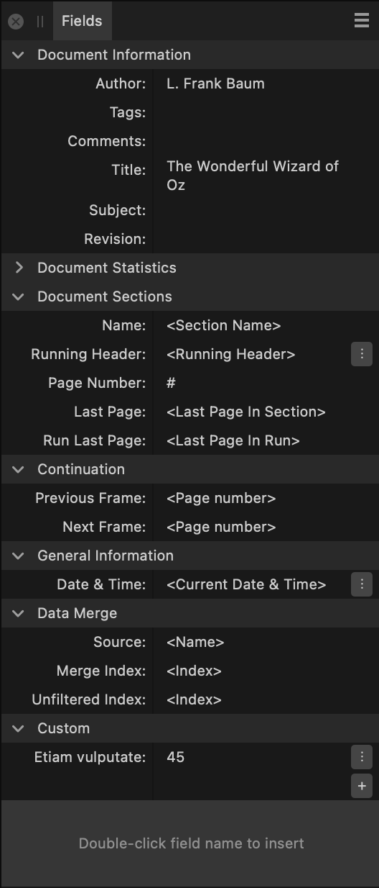

The Fields panel allows you to insert, view and format various pieces of information or metadata within your document to be automatically inserted into the document text. Fields will automatically update as data (for example, a date) changes.
From the Fields panel, you can view key information about your document and change the way certain fields are formatted.

Fields can be inserted at a text insertion point by double-clicking a field name in the panel.
The following sections are visible from the Fields panel: